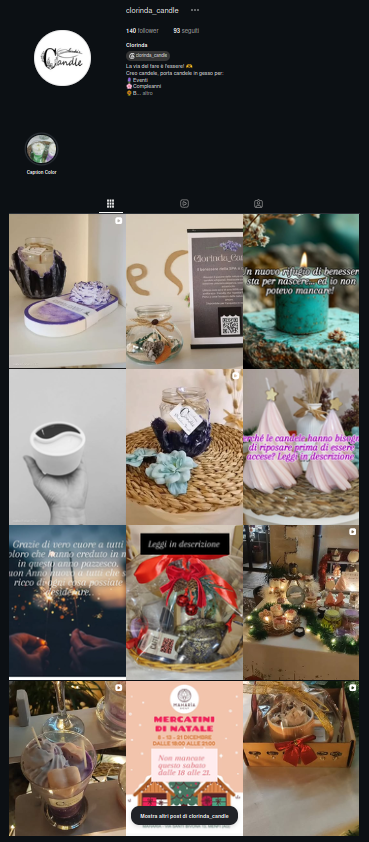

Seguimi su Instagram
Scopri le ultime creazioni e ispirazioni dal mio atelier.


Il calore di una candela fatta a mano
Ogni candela prende forma nel mio atelier, dove viene colata, rifinita e decorata con cura. Le piccole differenze tra una creazione e l’altra raccontano il lavoro artigianale e rendono ogni pezzo speciale.
Profumi avvolgenti e dettagli ispirati alla natura trasformano la luce di una candela in un rituale semplice: un momento di calma tutto per te, oppure un regalo fatto con il cuore.